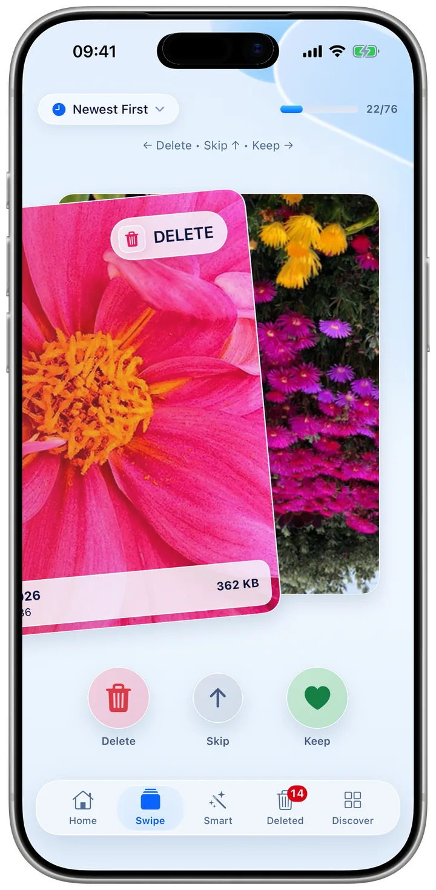

Swipe
One photo at a time.
Go through your library one photo at a time. Swipe left to delete, right to keep, or up to skip, and sort the pile newest, oldest or largest first.
- Undo takes back your last swipeChanged your mind? One tap.
- Newest, oldest or largest firstStart where the space is.
- Videos tooKipply works on photos and videos.
